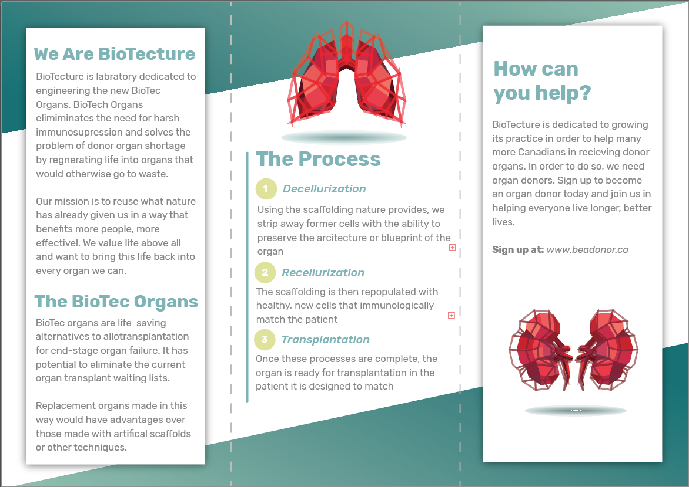
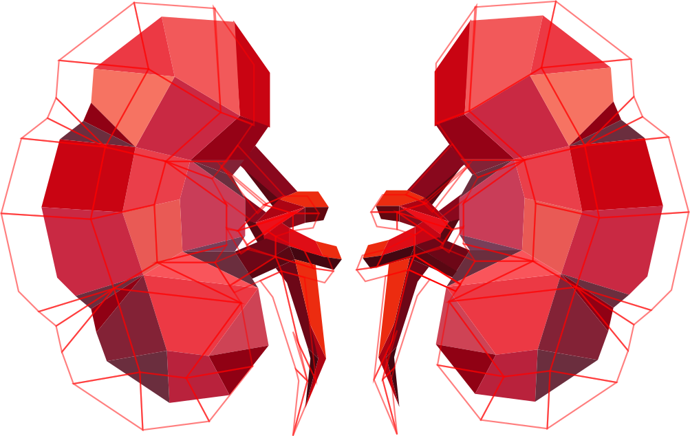

From the laboratory who studied and engineered The BioTec Organs, our name is a connection between biology and architecture. Our mission is to overcome donor organ shortage and the need for harsh immunosuppression; we can achieve this via our breakthrough procedure, The BioTec Organs. We take the most intricate architecture given by nature and recellularize the native matrix with the patient’s own cells to avoid the side effects of harsh immunosuppressive treatments. Our research has a high potential clinical impact and may not only change the field of organ engineering, but the treatment of end organ failure. Our projects are highly innovative, and can only be accomplished with the help of a creative and flexible multidisciplinary team.
A life-saving alternative that has a potential to eliminate the current organ transplant waiting lists. Are life-saving alternatives to allotransplantation for end-stage organ failure. It has a potential to eliminate the current organ transplant waiting lists. Replacement organs made in this way would have advantages over those made with artificial scaffolds or other techniques.
We use the scaffolding that nature provides. We strip away all the former living cells from a live or cadaveric organ, such as the DNA, lipids, soluble proteins, sugar, and all other cellular material. With this process, we are able to preserve the intricate architecture/blueprint of the organ. This technique is called ‘decellularization’.
The scaffold can then be repopulated with healthy new cells that are immunologically matched to the patient which lowers the need for immuno suppression - This process is the ‘regeneration or recellularization of the organ The process of decellularization and regeneration can replace failing organs in people and potentially manufacture an unlimited source of donor organs for transplantation.
At BioTecture, our goal is to not only raise awareness for our brand, but the process of organ regeneration as well. This type of engineering can save many lives if given the chance and proper promotion. Our goal is to make people aware of the organ regeneration BioTecture offers, and how they can either help, or possibly receive treatment themselves.
For marketing purposes, we have created a short ad that briefly describes what organ regeneration is and where to find out more information about it. Simple ads such as this can play anywhere from before YoutTube videos, or in hospital waiting rooms. Having it in places that offer healthcare makes sense, as generally people are already there for a reason. If they can find out more information for themselves or someone they know, then BioTecture can potentially help someone who may otherwise not have learned about organ regeneration. In addition to video, there are multiple advertisements which can be implemented in a multtitude of areas. Some ideas are bus stations, DMV, hospitals or online. These ads can be featured diitally or in print.